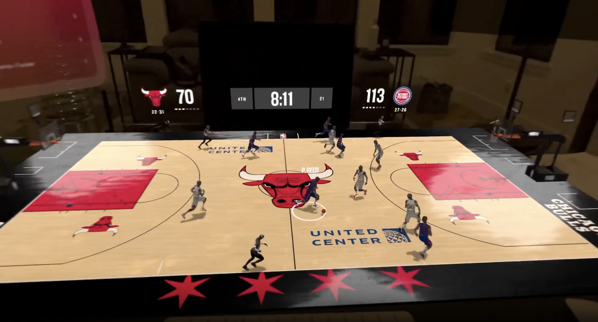

The NBA app for Apple Vision Pro reimagines the live sports experience through spatial computing. Fans can watch up to five live games simultaneously, monitor real-time player and game statistics through interactive floating leaderboards, and visualize player movement on a dynamic 3D tabletop court. The app also delivers games in Spatial Audio and introduces the future of sports broadcasting with Spectrum Front Row, featuring Los Angeles Lakers games in Apple Immersive.
As Technical Lead for the 3D simulation experience, I co-led the engineering team behind the real-time tabletop court visualization. I helped drive the architecture and implementation across multiple development tracks, collaborating closely with teams responsible for live data, video, and statistics to deliver a seamless spatial experience.
The project received the 2026 Apple Design Award for Innovation, recognizing its state-of-the-art experience and novel use of Apple technologies to redefine how fans engage with live sports through spatial computing.
